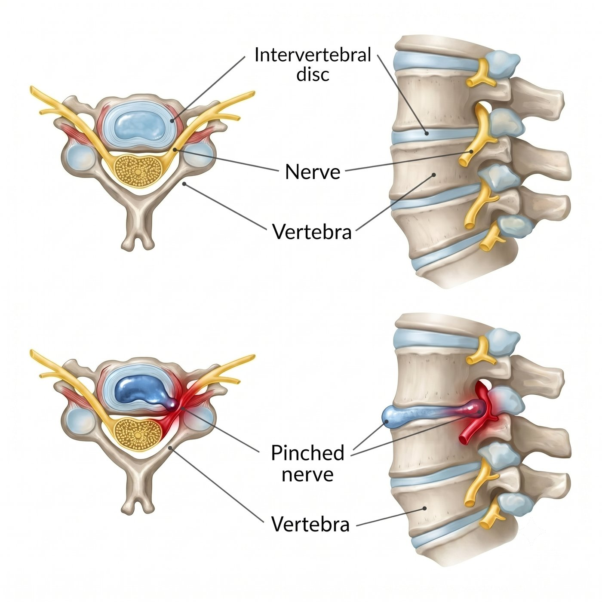

脖子僵硬、膏肓痛，一路麻到手指頭？小心是頸椎神經在發出求救訊號。
您是否有過這種經驗：
長時間看電腦、滑手機後，脖子後方和肩頸緊繃痠痛，甚至連肩胛骨內側，也就是俗稱的「膏肓」位置，都有深層痠痛感。
一開始以為只是姿勢不好、睡姿不良，或是工作太累。
但後來發現，痠痛不只停在脖子和肩膀，而是一路延伸到上臂、前臂，甚至手掌、手指開始發麻、刺痛，像被電到一樣。
有些人甚至發現，扣鈕扣、拿筷子、寫字、滑手機或提東西時，手變得比較笨拙，也比較沒力氣。
這種情況，就要小心可能不是單純肩頸痠痛，而是頸椎神經壓迫。
為什麼頸椎神經壓迫會造成手麻？
頸椎裡面有神經通往肩膀、手臂與手指。
當頸椎因為長期低頭、姿勢不良、退化、椎間盤突出或骨刺增生，導致神經通道變窄時，就可能壓迫到頸椎神經。
當神經受到壓迫，除了脖子與肩膀痠痛外，也可能沿著神經分布的位置，出現手臂、手掌或手指的麻木與疼痛。
常見症狀包括：
- 肩頸痠痛
- 膏肓或肩胛骨內側疼痛
- 手臂痠痛、抽痛或電擊感
- 手掌、手指麻木
- 手指刺痛、針扎感
- 握力變差
- 拿東西容易掉
- 低頭、轉頭或抬頭時症狀加重
有些人麻在大拇指、食指；有些人麻在中指、無名指或小指。
神經被壓迫的位置不同，麻痛延伸的範圍也會不一樣。
所以，真正重要的不是只看「哪裡麻」，而是要判斷：
是哪一條神經受到壓迫。

什麼症狀需要特別注意？
如果出現以下情況，建議儘早由醫師評估：
- 肩頸痛反覆發作
- 疼痛從脖子延伸到肩膀、手臂或手指
- 手麻、手指麻反覆出現
- 手臂有電擊感、針刺感或抽痛
- 轉頭、低頭或抬頭時症狀加重
- 握力變差，拿東西容易掉
- 手部動作變笨拙，例如扣鈕扣、拿筷子、寫字變困難
- 手臂或手掌肌肉出現無力感
- 常因手麻或肩頸劇痛影響睡眠
- 吃藥、復健後仍反覆發作
般 X 光可以看頸椎退化、骨刺與排列；如果要確認神經或脊髓壓迫的位置與嚴重程度，通常需要安排核磁共振檢查。
一直拖延會怎麼樣？
頸椎神經壓迫有些會隨著休息、藥物、復健與姿勢調整逐漸改善。
但如果神經持續被壓迫，手麻、手痛或無力反覆發作，可能會讓人越來越不敢工作、開車、拿重物，甚至影響睡眠。
有些人一開始只是肩頸痠痛，後來變成手臂麻痛；
原本只是手指麻，後來變成握力下降、拿東西容易掉。
長時間嚴重壓迫，可能導致手部肌肉萎縮，甚至出現手掌虎口凹陷、握力驟減等較難恢復的神經損傷。
更需要注意的是，如果壓迫到的是脊髓，情況就不只是手麻而已。脊髓就像身體的主要神經幹線，一旦空間已經很狹窄，若又不小心跌倒、車禍或受到外力撞擊，最嚴重可能造成四肢無力，甚至四肢癱瘓等重大後果。
所以，手麻不一定只是循環不好。
如果症狀已經反覆影響生活，尤其合併手部無力、走路不穩或平衡變差，就不應該只是一直忍耐。
頸椎神經壓迫一定要開刀嗎？
不一定。
不是每一個頸椎神經壓迫都需要手術。
如果神經壓迫尚未造成明顯肌肉無力或脊髓損傷，有些患者可以先透過藥物、復健、姿勢調整，或神經阻斷、注射治療來改善症狀。
但重點是：
- 您的手麻、肩頸痛，到底是不是頸椎神經壓迫造成的？
- 影像上的椎間盤突出或骨刺，是否真的和症狀相符合？
- 目前是可以先保守治療，還是已經需要進一步處理？
這些都需要在門診透過症狀、身體檢查與影像檢查一起判斷。
什麼是頸椎微創減壓與人工椎間盤置換手術？
如果神經壓迫明確，症狀持續影響生活，且保守治療效果有限，就可能需要評估是否適合手術治療。
頸椎手術的目的，是幫被壓迫的神經或脊髓「減壓」。
簡單來說，就是把壓迫神經的突出椎間盤、骨刺或退化組織移除，讓神經重新有空間。
頸椎手術會依照壓迫的位置、範圍、神經受壓程度與頸椎穩定度，選擇適合的方式。
常見方式包括頸椎微創融合手術與人工椎間盤置換手術。
| 比較項目 | 頸椎微創融合手術 ACDF | 人工椎間盤置換手術 ADR |
|---|---|---|
| 結構處理 | 清除壓迫神經的病灶後，置入支架，讓該節段固定融合 | 清除壓迫神經的病灶後，置入可活動式人工椎間盤 |
| 頸椎活動度 | 該節段不再活動，活動度由上下節段代償 | 保留該節段較自然的彎曲與轉動活動度 |
| 手術概念 | 以穩定與減壓為主 | 減壓後，保留原本椎間盤的活動功能 |
| 相鄰節段負擔 | 上下相鄰節段未來可能承受較多代償壓力 | 減少相鄰節段的代償負擔 |
| 適合對象 | 頸椎不穩定、嚴重骨刺、關節退化或變形明顯者 | 椎間盤活動度仍良好、沒有明顯不穩或嚴重關節退化者 |
人工椎間盤置換的概念，更接近人體原本椎間盤的功能。
它的目的不只是減壓，也希望在治療神經壓迫的同時，保留頸椎彎曲、伸展與轉動的活動能力，讓手術後的頸椎活動方式更接近原本的自然構造。
對適合的患者來說，人工椎間盤的優點包括：
- 保留較多頸椎活動度
- 較接近人體原本椎間盤的活動概念
- 可能減少相鄰節段的代償負擔
- 在減壓後同時維持頸椎高度與穩定性
- 幫助患者更自然地回到日常活動
但人工椎間盤並不是每一位患者都適合。
是否適合人工椎間盤，需要依照年齡、椎間盤退化程度、骨刺嚴重度、神經壓迫位置、頸椎穩定性與活動度一起評估。
對適合的患者來說，手術目標是：
- 減少神經壓迫
- 改善肩頸痛與手臂麻痛
- 減少手麻與無力
- 保護神經功能
- 幫助恢復日常活動
- 手麻，不一定只是姿勢不好
很多人因為害怕頸椎手術，選擇一忍再忍。
但如果肩頸痛、手麻、手臂痠痛或握力變差已經影響您的生活，就不要只是一直忍耐。
尤其當手部變笨拙、走路不穩，或症狀已經反覆惡化時，更應該儘早讓專業醫師協助判斷。
讓專業醫師協助您評估，找出真正的原因，才能選擇最適合您的治療方式。
手術不是目的，重新回到生活才是目的。
把時間留給生活，不留給疼痛。